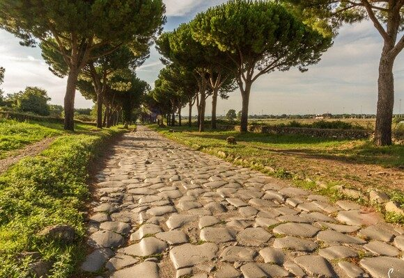
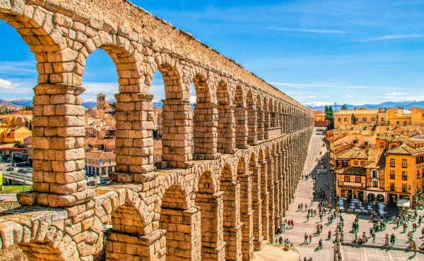
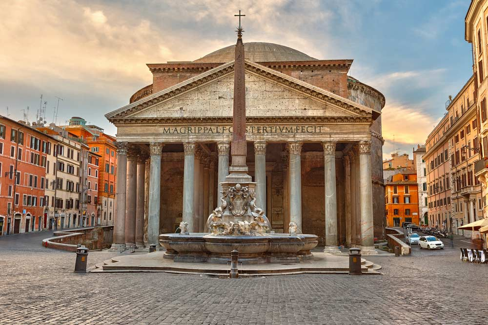
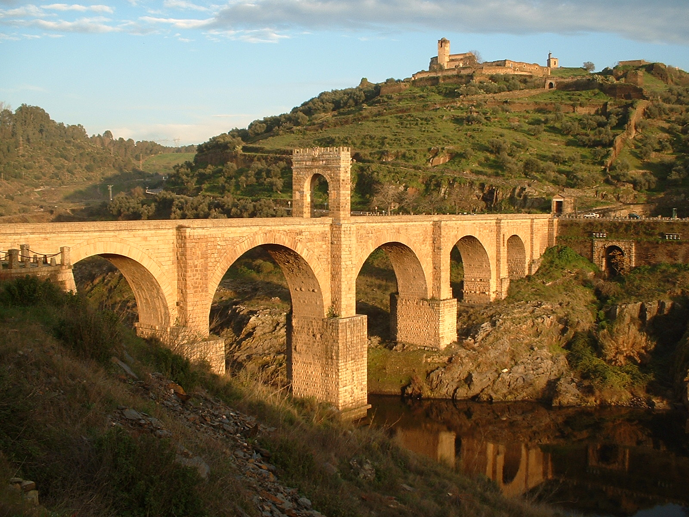
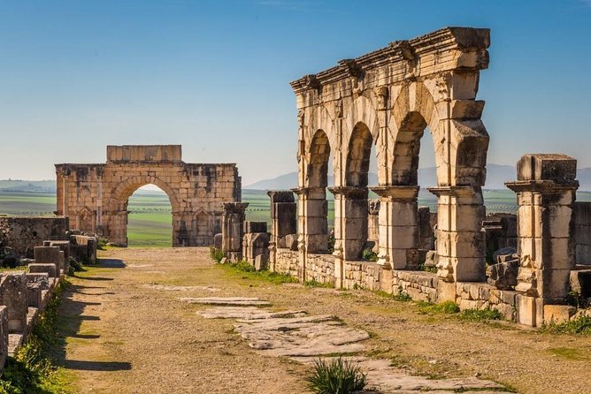
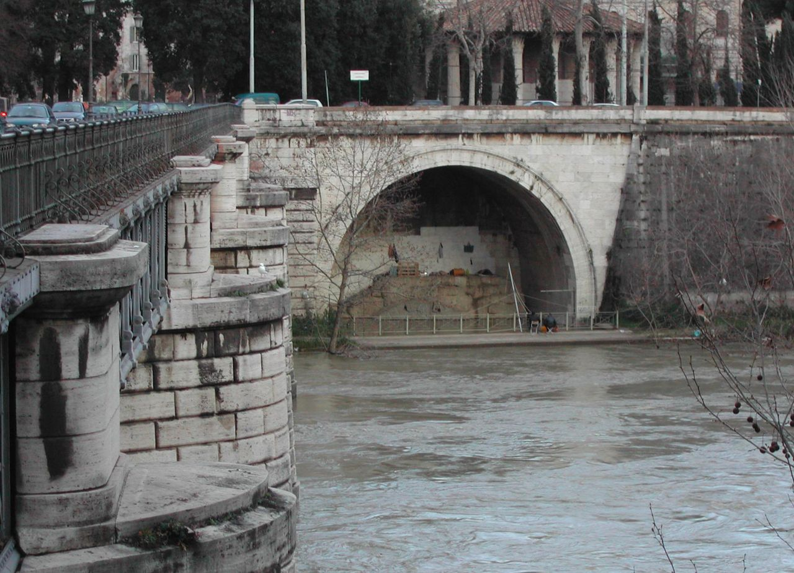

O que eram as Tecnologias Romanas
As tecnologias romanas foram conhecimentos e técnicas utilizados para resolver problemas do cotidiano e melhorar a organização das cidades e do território. Elas contribuíram para facilitar a circulação de pessoas e mercadorias, o abastecimento das cidades e o desenvolvimento das atividades econômicas.
PRINCIPAIS TECNOLOGIAS
Construções que marcaram Roma

ESTRADAS
As estradas romanas eram vias construídas para facilitar o deslocamento de pessoas e tropas por grandes distâncias. Sua construção exigia planejamento, conhecimento do terreno, mão de obra e materiais adequados.
SAIBA MAIS
Elas podiam receber diferentes camadas de pedras e outros materiais para garantir maior resistência e durabilidade. A pavimentação permitia que pessoas, mercadorias e tropas percorressem grandes distâncias com mais facilidade, ligando diferentes regiões do território romano. Assim, as estradas facilitavam a circulação e atendiam às necessidades econômicas e militares de Roma

AQUEDUTOS
Os aquedutos romanos eram estruturas construídas para transportar água de fontes até as cidades. Eles foram importantes para garantir o abastecimento de água em diferentes áreas urbanas.
SAIBA MAIS
A água era conduzida principalmente pela força da gravidade, por isso o percurso precisava ser cuidadosamente planejado para manter a inclinação adequada. A construção exigia conhecimentos de engenharia, medição e análise do terreno. Os aquedutos podiam atravessar vales e terrenos irregulares, levando água para fontes, termas, residências e outros espaços públicos.

CONCRETO ROMANO
O concreto romano era um material de construção utilizado pelos romanos para criar estruturas resistentes e duráveis. Seu uso foi importante para o desenvolvimento da engenharia e da arquitetura romana.
SAIBA MAIS
Ele era produzido a partir da mistura de materiais como cal, água e agregados, formando um material que podia ser utilizado em diferentes tipos de construções. Os romanos aperfeiçoaram seu uso e aplicaram o concreto na construção de estruturas maiores e mais resistentes, contribuindo para a construção de pontes, edifícios, portos e outras obras.

PONTES
As pontes romanas eram construções feitas para permitir a passagem por rios e outros obstáculos naturais. Elas eram importantes para manter as rotas terrestres e facilitar a circulação pelo território romano.
SAIBA MAIS
Os romanos utilizavam arcos e materiais resistentes para construir pontes capazes de suportar o peso de pessoas, animais, carroças e tropas. Assim, mesmo quando um rio interrompia uma rota terrestre, a ponte permitia que o caminho continuasse, facilitando o transporte e a circulação entre diferentes regiões.

PORTOS
Os portos romanos eram estruturas construídas para receber e movimentar navios e mercadorias. Eles eram importantes para o comércio e para a circulação de produtos entre diferentes regiões.
SAIBA MAIS
Os portos permitiam o embarque e desembarque de mercadorias transportadas pelo mar. Sua construção e organização ajudavam a aumentar a capacidade de receber navios, facilitando o transporte de produtos e conectando diferentes partes do território romano por meio das rotas marítimas.

SANEAMENTO
O saneamento romano reunia técnicas e estruturas utilizadas para melhorar as condições de higiene e organização das cidades. Ele fazia parte das soluções criadas pelos romanos para lidar com as necessidades das áreas urbanas.
SAIBA MAIS
Entre essas estruturas estavam os sistemas de esgoto e de abastecimento de água, que ajudavam a transportar e controlar a água e os resíduos das cidades. Essas obras exigiam planejamento e conhecimentos de engenharia, ajudando no funcionamento das cidades.
Tecnologia como base da expansão
A tecnologia foi fundamental para que Roma conseguisse expandir, controlar e integrar um território gigantesco. Estradas, pontes, aquedutos, portos e outras obras permitiam que soldados, comerciantes, mercadorias, água e informações circulassem entre regiões muito distantes. Assim, a tecnologia não servia apenas para melhorar a vida cotidiana: ela também dava suporte à economia, ao exército e à administração do Império Romano.